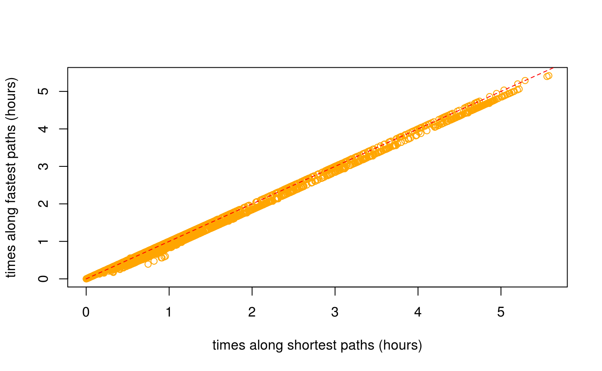

Street networks and time-based routing
Mark Padgham
2020-08-28
Source:vignettes/times.Rmd
times.Rmd1 Street Networks and Time-Based Routing
This vignette describes the use of the dodgr package for routing through street networks, specifically for Open Street Map (OSM) networks extracted with the osmdata package, or via the dodgr functions dodgr_streetnet() and dodgr_streetnet_sc(). Both of these functions use the osmdata package package to extract networks from Open Street Map, with the former returning data in Simple Features (sf) format, and the latter in Silicate (sc) format. The latter format enables more detailed weighting, notably including the effects of turning angles and elevation, as described below.
This vignette describes different approaches to weighting street networks for routing based on either distances (shortest paths) or times (fastest paths). We start by briefly describing the Silicate (sc) format data returned by dodgr_streetnet_sc(), including the ability to incorporate elevation data, before describing how to use these data for different kinds of routing.
2. Silicate data and the dodgr_streetnet_sc() function
Silicate (sc) is a new format for spatial data. Unlike almost all previous formats available in R for representing and processing spatial data, which attempt to wrangle complex, multidimensional data into a single, flat table, the Silicate (sc) format is multi-tabular. In its simplest form, it consists of three tables of vertices, edges, and objects. The vertices are points, the edges are binary relationships or connections between them, and the objects are high-order relationships or assemblages of edges. The new osmdata function, osmdata_sc() extracts OSM data in Silicate (sc) format, and returns seven tables plus an additional table of meta-data. The dodgr functions may be directly used without understanding the format of these data, but for those wishing to know, the tables are:
-
nodes, containing all OSM key-value data for nodes or vertices; -
relation_memberscontaining all membership information of OSM relations; -
relation_properties, containing all key-value data for OSM relations; -
object, containing all key-value data for OSM ways; -
object_link_edge, connecting allobjectmembers to their constituent edges; -
edge, a simple table of vertex pairs forming each edge; and -
vertex, containing the coordinates and ID values of each OSM node, along with elevation data if provided.
Elevation data are used in time-based routing, and are particularly important for modelling pedestrian and bicycle transport. The may be readily incorporated with Silicate (sc) format data with the new osmdata function, osm_elevation(). This function requires a locally-stored GeoTIFF-formatted elevation data file to be downloaded from the Consortium for Spatial Information, or any other source. These data may then be appended by calling osm_elevation(), and specifying the name of this file. While time-based routing is possible with sf format data, it is currently not possible to incorporate elevation data with such data.
3. The weight_streetnet() function
The dodgr package represents all networks, including street networks, in flat, tabular form in which each row represents a network edge. Spatial data derived from OSM, either explicitly with the osmdata package, or through the dodgr helper functions, dodgr_streetnet() for sf or dodgr_streetnet_sc() for sc format data, may be directly submitted to the dodgr function, weight_streetnet(). The two most important parameters in this function are:
-
wt_profile, a character string generally specifying a mode of transport (generally one of “bicycle”, “foot”, “goods”, “hgv”, “horse”, “moped”, “motorcar”, “motorcycle”, “psv”, or “wheelchair”); and -
turn_penalty, specifying whether edge times should include delays associated with turning across oncoming traffic.
The first of these options is described further in the following sub-section. The second option has no effect for sf data, but is particularly important for sc format data, for which it enables estimation of temporal delays associated with turning across oncoming traffic. Calculation of turn penalties is achieved through fundamentally modifying the resultant graph as depicted in Fig. 1.

Figure 1 depicts a right-angled crossing, with straight arrows showing a single directed edge into the crossing (solid black line), and three directed edges going out (solid grey lines). Turning across oncoming traffic generally takes time (the precise values for which are detailed in the following section), and so turning left (\(A\rightarrow B\) in Fig. 1) is always different to turning right (\(A\rightarrow C\)). To reflect these differences, graphs are weighted to account for turning penalties by adding three “compound” edges directly connecting \(A\) with the end points of \(B\), \(C\), and \(D\), including the additional time penalties for turning across oncoming traffic. (The latter are naturally dependent on which side of the road traffic travels, and so weight_streetnet() includes an additional left_side parameter to specify whether traffic travels on the left side of the street.)
The compound edges do not, however, simply replace the previous edges, because routing may still need to begin or end at the junction node, \(O\). The edge \(A\rightarrow O\) is thus retained so that \(O\) may be used as a destination for routing, but \(O\) in this case no longer connects with the outgoing edges. Because \(O\) may also be used as a starting node for routing, then the edges \(O\rightarrow B\), \(O\rightarrow C\), and \(O\rightarrow D\) must also be retained. Because dodgr works by uniquely labelling all nodes and edges, the entire situation depicted in Fig. 1 is achieved by replacing \(O\) with two new nodes labelled \(O\_start\) and \(O\_end\), with the end result of replacing the former four directed edges with the following seven edges:
- \(A\rightarrow O\_end\) (original black edge, where \(O\_end\) no longer connects to any other node);
- \(O\_start\rightarrow B\) (original grey edges, where no nodes connect to \(O\_start\));
- \(O\_start\rightarrow C\) (…);
- \(O\_start\rightarrow D\) (…);
- \(A\rightarrow B\) (new compound edge);
- \(A\rightarrow C\) (…);
- \(A\rightarrow D\) (…);
Weighting for time-based routing thus not only introduces new “compound” edges, but also requires re-labelling junction vertices, through appending either “_start” or “_end”. Recommended practice for routing in such cases is to select routing vertices (origins and destinations) from a standard weighted graph (that is, one generated with turn_penalty = FALSE), and then to modify these routing vertices as illustrated in the following example:
dat_sc <- dodgr_streetnet_sc ("ogbomosho nigeria") graph <- weight_streetnet (dat_sc, wt_profile = "bicycle") graph_t <- weight_streetnet (dat_sc, wt_profile = "bicycle", turn_penalty = TRUE) nrow (graph); nrow (graph_t)
## [1] 164168 173160The time-weighted graph has additional compound edges used to reflect the penalty for turning across traffic. Let’s now presume we want to calculate distances between some number of randomly-selected street junctions. The junctions may readily be extracted through the dodgr_contract_graph() function, which reduces the graph to junction vertices only. The junction vertices of graph_t are re-labelled as described above to separate incoming from outgoing edges (through appending _start and _end to vertex names), and so may not be used for routing. Instead, routing points should be taken from the contracted version of the original graph.
graphc <- dodgr_contract_graph (graph) # not graph_t! v <- dodgr_vertices (graphc) n <- 100 # number of desired vertices from <- sample (v$id, size = n) to <- sample (v$id, size = n)
These can then be submitted to any dodgr functions along with the graph with turn penalties, and will be matched on to the corresponding nodes appended with _start for the fromvertices and _end for the to vertices. As usual, it will generally be quicker to first contract the graph prior to routing.
graph_tc <- dodgr_contract_graph (graph_t) nrow (graph_tc); nrow (graph_t)
## [1] 35808 176160Contracting this graph has reduced its size by almost 80%, translating to considerably faster routing queries. The resultant graph, along with the from and to routing points, may be passed to any of the dodgr routing functions, such as dodgr_distances(), dodgr_paths(), or even dodgr_flows_aggregate(), as well as the all-new function detailed in the following section, dodgr_times().
3.1 Weighting profiles and the write_dodgr_wt_profile function
As demonstrated above, usage of the weight_streetnet() function will generally be as simple as specifying the mode of transport for which the network is to be weighted. It may nevertheless be desirable to explicitly determine individual aspects of a weighting profile (such as the time penalties for turning angles explored above). All weighting profiles are contained in the internal data, dodgr::weighting_profiles, which contain the following data, for brevity showing only the “bicycle” mode:
lapply (dodgr::weighting_profiles, function (i) i [i$name == "bicycle", ])
## $weighting_profiles
## name way value max_speed
## 67 bicycle motorway 0.00 NA
## 68 bicycle trunk 0.30 NA
## 69 bicycle primary 0.70 15
## 70 bicycle secondary 0.80 15
## 71 bicycle tertiary 0.90 15
## 72 bicycle unclassified 0.90 15
## 73 bicycle residential 0.90 15
## 74 bicycle service 0.90 15
## 75 bicycle track 0.90 12
## 76 bicycle cycleway 1.00 15
## 77 bicycle path 0.90 12
## 78 bicycle steps 0.50 4
## 79 bicycle ferry 0.20 15
## 80 bicycle living_street 0.95 15
## 81 bicycle bridleway 0.70 8
## 82 bicycle footway 0.90 4
## 83 bicycle pedestrian 0.80 4
## 84 bicycle motorway_link 0.00 NA
## 85 bicycle trunk_link 0.30 NA
## 86 bicycle primary_link 0.70 15
## 87 bicycle secondary_link 0.80 15
## 88 bicycle tertiary_link 0.90 15
##
## $surface_speeds
## name key value max_speed
## 24 bicycle surface cobblestone:flattened 10
## 25 bicycle surface paving_stones 10
## 26 bicycle surface compacted 10
## 27 bicycle surface cobblestone 6
## 28 bicycle surface unpaved 6
## 29 bicycle surface fine_gravel 6
## 30 bicycle surface gravel 6
## 31 bicycle surface pebblestone 6
## 32 bicycle surface ground 6
## 33 bicycle surface dirt 6
## 34 bicycle surface earth 6
## 35 bicycle surface grass 6
## 36 bicycle surface mud 3
## 37 bicycle surface sand 3
## 38 bicycle surface sett 10
##
## $penalties
## name traffic_lights turn
## 4 bicycle 2 6The main weighting_profiles$weighting_profiles table contains a value column used to determine preferential weightings for particular kinds of ways for the designated mode of transport, from a maximum of 1.0 for the most preferable ways to 0.0 for ways that are untraversable for that mode of transport, along with an additional column specifying maximum speeds in kilometres per hour. Actual maximum speeds may be reduced by changes in surface, as specified in the second table (surface_speeds), while the final table contains time penalties in seconds for both traffic lights and turn penalties.
Values in this table may be edited by first creating a local, json-formatted version with the function, write_dodgr_wt_profile(), editing the values as desired, and then specifying the location of the json file containing the modified data with the additional argument to weight_streetnet() of wt_profile_file.
4. Time-based routing and the dodgr_times() function
By default, dodgr_distances() and all other standard routing functions (paths, flows_) are distance-based, meaning routing is along paths with the shortest distances. In contrast, time-based routing calculates paths with the shortest times; in other words, the fastest rather than shortest paths. Distances may nevertheless be calculated along fastest paths, through the shortest = FALSE parameter. The function still returns distances (in metres), but as calculated along fastest paths. An example:
graph <- weight_streetnet (hampi, wt_profile = "foot") n <- 100 # number of sample routing vertices from <- sample (graph$from_id, size = n) to <- sample (graph$from_id, size = n) d_dist <- dodgr_dists (graph, from = from, to = to, shortest = TRUE) # default d_time <- dodgr_dists (graph, from = from, to = to, shortest = FALSE) # fastest paths plot (d_dist / 1000, d_time / 1000, col = "orange", xlab = "distances along shortest paths (km)", ylab = "distances along fastest paths (km)") lines (0:100, 0:100, col = "red", lty = 2)
The average distance between the two (in metres) is:
## [1] 46.03612The plot reveals that shortest distances are indeed somewhat shorter than distances along fastest paths, but also that some fastest paths are actually shorter than shortest paths:
index <- which (!is.na (d_time) & !is.na (d_dist)) length (which (d_time [index] < d_dist [index])) / length (index)
## [1] 0.01489555While dodgr and indeed all routing engines attempt to maximally reconcile differences between fastest and shortest routes, there nevertheless remain important discrepancies. Foremost among these, and the primary reason why some fastest routes may in fact be shorter than shortest routes, is that fastest routes allocate preferences for different kinds of way based both on the value column in the weighting_profiles$weighting_profiles table illustrated above, and on the actual maximum speed of a given edge, which itself may be a combination of maximum speeds as specified in OSM itself, maximum speeds from the weighting_profiles$weighting_profiles table, or values specific to a given surface. The result is that some unique combination of maximum speeds along a network may lead to fastest routes being preferentially directed along a path that is actually shorter than the direct shortest path which is calculated independent of maximum speed values.
Such discrepancies are important in understanding differences in routes times calculated along shortest versus fastest paths. These times can be calculated (in seconds) with the dodgr_times() function:
t_dist <- dodgr_times (graph, from = from, to = to, shortest = TRUE) # default t_time <- dodgr_times (graph, from = from, to = to, shortest = FALSE) # fastest paths plot (t_dist / 3600, t_time / 3600, col = "orange", xlab = "times along shortest paths (hours)", ylab = "times along fastest paths (hours)") lines (0:100, 0:100, col = "red", lty = 2)

## [1] 47.46474As above, times along fastest paths are generally less than times along shortest paths, although there are again a few exceptions:
index <- which (!is.na (t_time) & !is.na (t_dist)) length (which (t_dist [index] < t_time [index])) / length (index)
## [1] 0.009809264These results demonstrate how the combination of the dodgr_distances() and dodgr_times() functions enable calculation of both distances and times along both shortest and fastest paths.
4.1 Time-based paths and flow aggregation
The dodgr_times() works by simply swapping the columns of a graph, so that distance becomes time, and weighted distance becomes weighted time. The other dodgr routing functions (dodgr_paths(), dodgr_flows_aggregate(), dodgr_flows_disperse()) do not have explicit time-based equivalents. Instead, time-based routing can be implemented simply through replacing the weighted distance column (d_weighted) with the weighted time column (time_weighted):
graph$d_weighted <- graph$time_weighted
All routes will then be automatically calculated along fastest rather than shortest routes.